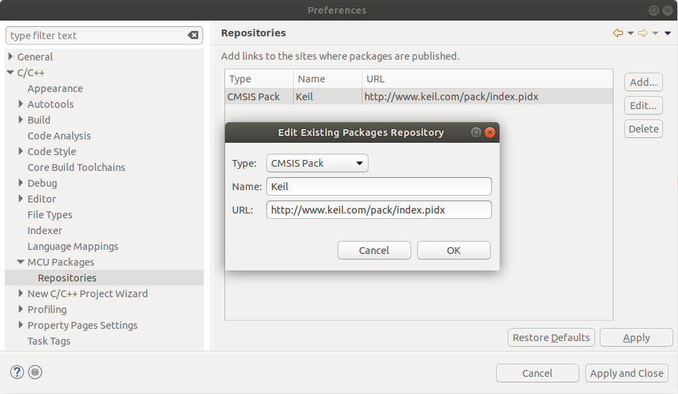
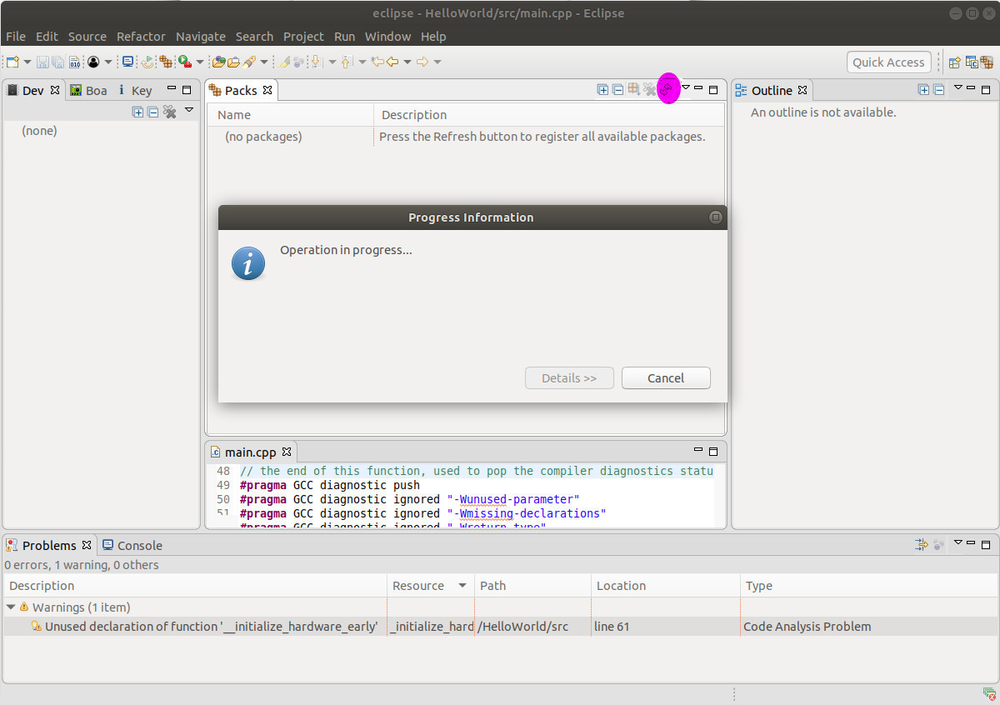

2.2 Prepare Free IDEs for Developing STM32
Longer Vision Robot strongly recommend two free IDEs for developming STM32:
And GNU MCU Eclipse is adopted in our case.
2.2.1 GNU MCU Eclipse
Step 1: Install Eclipse
It's supposed that students have already installed Eclipse. For the time being, the most recent Eclipse release is Eclipse Oxygen 3A, and what we are using is Eclipse IDE for C/C++ Developers - Linux 64-bit.
Step 2: Install GNU MCU Plug-ins for Eclipse
According to GNU MCU Eclipse:
GNU MCU Eclipse is an open source project that includes a family of Eclipse plug-ins and tools for multi-platform embedded ARM and RISC-V development, based on GNU toolchains. This project is hosted on GitHub. The former project was hosted on GitHub and SourceForge.
The right-hand sidebar on GNU MCU Eclipse clearly summarizes what's needed to be installed, as in the following image:

According to our summation, four things must be installed:
A. Install Eclipse Plug-in
Currently, if you install the plugin from within Eclipse by providing the plugin's update site URL http://gnu-mcu-eclipse.netlify.com/v4-neon-updates, you will possibly meet the following error message:

Therefore, we have this Eclipse Plugin installed from within Eclipse MarketPlace as follows:

B. Install ARM Toolchain
It's clearly summarized in https://gnu-mcu-eclipse.github.io/toolchain/arm/install/ that there are 2 ways to carry out the installation for GNU MCU Eclipse ARM Embedded GCC: The xPack install and Manual install.
The manual install is strongly recommended. You ONLY need to visit GNU MCU Eclipse ARM Embedded GCC, and download the corresponding file. gnu-mcu-eclipse-arm-none-eabi-gcc-7.2.1-1.1-20180401-0515-centos64.tgz is downloaded and extracted under /opt/GCCToolChains in our case. Let's have a look at what files are under the ARM toolchain folder:
/opt/GCCToolChains/gnu-mcu-eclipse/arm-none-eabi-gcc/7.2.1-1.1-20180401-0515/bin$ ls
arm-none-eabi-addr2line arm-none-eabi-elfedit arm-none-eabi-gcc-ranlib arm-none-eabi-gprof arm-none-eabi-ranlib
arm-none-eabi-ar arm-none-eabi-g++ arm-none-eabi-gcov arm-none-eabi-ld arm-none-eabi-readelf
arm-none-eabi-as arm-none-eabi-gcc arm-none-eabi-gcov-dump arm-none-eabi-ld.bfd arm-none-eabi-size
arm-none-eabi-c++ arm-none-eabi-gcc-7.2.1 arm-none-eabi-gcov-tool arm-none-eabi-nm arm-none-eabi-strings
arm-none-eabi-c++filt arm-none-eabi-gcc-ar arm-none-eabi-gdb arm-none-eabi-objcopy arm-none-eabi-strip
arm-none-eabi-cpp arm-none-eabi-gcc-nm arm-none-eabi-gdb-py arm-none-eabi-objdump
C. Install J-Link
The J-Link binaries are available at SEGGER. In our case, DEB installer 64-bit is to be downloaded from https://www.segger.com/downloads/jlink/JLink_Linux_x86_64.deb. And to install it, we ONLY need to double-click this deb file under Ubuntu.
J-Link is defaultly installed under folder /opt/SEGGER.
/opt/SEGGER$ ls -ls
total 4
0 lrwxrwxrwx 1 root root 23 May 11 07:33 JLink -> /opt/SEGGER/JLink_V632c
4 drwxr-xr-x 8 root root 4096 May 15 13:04 JLink_V632c
D. Install ST-Link
The reason why we need to install ST-Link is that Nucleo-144 board with STM32F767ZI comes with a ST-Link on board. The processes on how to checkout and build the source code are clearly displayed by the following commands:
$ git clone git@github.com:jiapei100/stlink.git
$ cd stlink
$ mkdir build
$ cd build
$ ccmake ../
$ make -j8
$ sudo make install
Four exe files are respectively installed as:
- /usr/local/bin/st-flash
- /usr/local/bin/st-info
- /usr/local/bin/st-util
- /usr/local/bin/stlink-gui
Step 3: Update Packs
A. Set MCU Packages and Package Repositories

According to the description on https://gnu-mcu-eclipse.github.io/plugins/packs-manager/, we need to input http://www.keil.com/pack/index.pidx into URL in dialog MCU Packages - Repositories, as follows:

B. Packs: Open Perspective
Click on Window->Perspective->Open Perspective->Other, you will see the following perspective:
C. Packs: Operation In Progress
Then double click Packs, and click the refresh button to Update the packages definitions from all repositories.

D. Packs: Install Required Packs
After around half an hour on my computer, and multiple times of clicking Retry and Ignore, I got the following views:

It's NOT hard to find STMicroelectronics->STM32F7 Series and have STM32F7xx_DFP installed. The NEWEST version 2.10.0 will be installed by default.

Note: You might meet this ERROR while installing a pack. java.security.InvalidAlgorithmParameterException: the trustAnchors parameter must be non-empty
This is a bug from Java, and the solution can be found on https://github.com/mikaelhg/broken-docker-jdk9-cacerts. Be more specific, the solutions is:
$ /usr/bin/printf '\xfe\xed\xfe\xed\x00\x00\x00\x02\x00\x00\x00\x00\xe2\x68\x6e\x45\xfb\x43\xdf\xa4\xd9\x92\xdd\x41\xce\xb6\xb2\x1c\x63\x30\xd7\x92' > /etc/ssl/certs/java/cacerts
$ /var/lib/dpkg/info/ca-certificates-java.postinst configure
Step 4: Window Preference
Finally, we configure Eclipse IDE for STM32 MCU development. Click on Window->Preferences.
A. MCU Configuration
Global ARM Toolchains Paths

Alternatively, you can configure OpenOCD toolchain instead.
Alternatively, you can configure RISC-V toolchain instead.
Global QEMU Path

Global SEGGER J-Link Path
B. Workspace Preference
Just enable save automatically before build and UTF-8 encoding within Workspace Preference.
2.2.2 SW4STM32 (System Workbench for STM32)
To install the free IDE System Workbench for STM32, ST's official website is redirected to OpenSTM32. Users must first register on OpenSTM32, and then strictly follow Installing System Workbench for STM32.
Since we are going to use 2.2.1 GNU MCU Eclipse throughout our course, we are NOT going to elaborate how to carry out the development for STM32 using System Workbench for STM32.